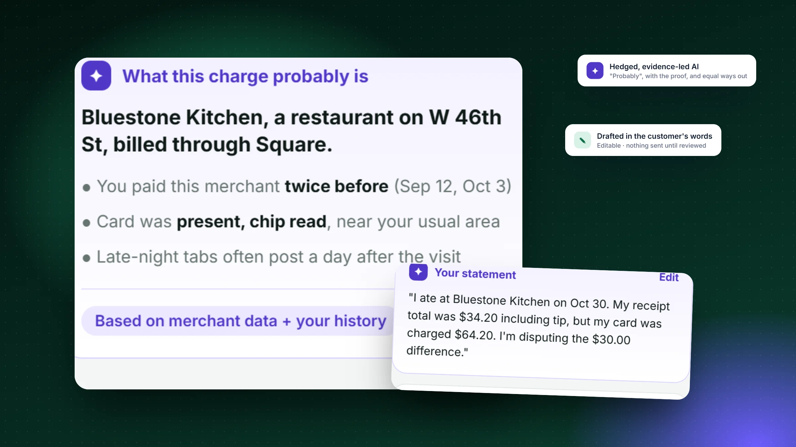
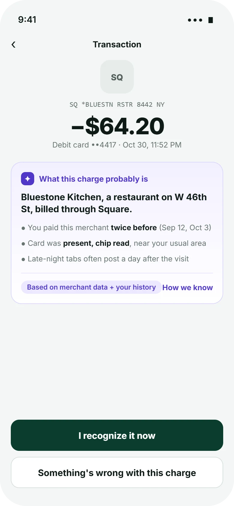
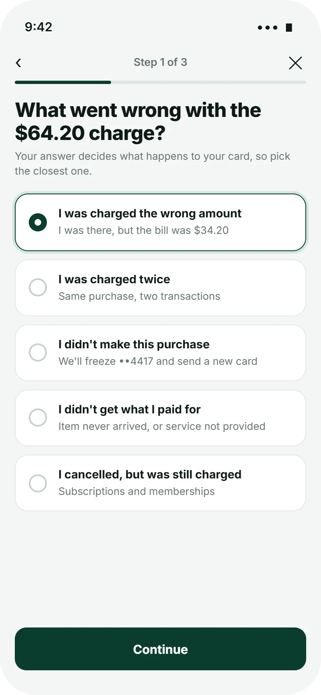
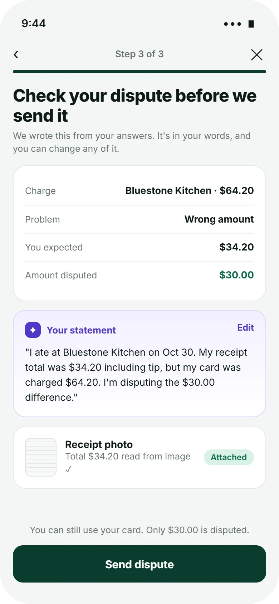
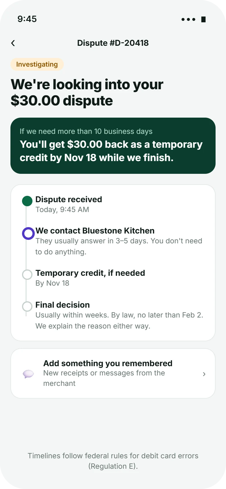

Concept projectI didn't test this with customers. The audit is based on common patterns in today's dispute flows, the timelines come from the regulation itself, and the AI behavior follows published Human-AI interaction guidelines (sources at the end). Merchants, amounts and the bank in the screens are fictional. This is a design study, not legal advice.
Overview
Long story short
Context
When people see a charge they don't understand, the bank app usually offers one path: "Report a problem." What follows is a form built around the bank's process, not the customer's question.
Problem
Two failures sit on either side of one button. Customers dispute legitimate charges because the merchant name on the statement is unrecognizable. And customers with a real problem fill in jargon-heavy forms with no idea what happens next, or when.
My role
Ran a heuristic audit of a typical dispute flow and mapped the regulatory timelines into product requirements.
Designed the AI's behavior using published Human-AI interaction guidelines: what it explains, what it drafts, and what it never decides.
Designed the flow, wrote the decision log, failure modes and validation plan.
Solution
Explain before dispute: the assistant identifies the merchant with visible evidence. If something's wrong, a five-way triage routes it correctly, the AI drafts the dispute in the customer's words, and the status screen turns the law's deadlines into dated promises.
Deliverables
Heuristic audit, rules-to-UX map, AI behavior spec, decision log, 4 high-fidelity screens, failure-mode handling, validation plan and metrics.
Heuristic audit
What a typical dispute flow gets wrong
I reviewed the common shape of in-app dispute flows against Nielsen's usability heuristics. The patterns below are generalized rather than tied to one bank, and each one became a requirement.
Pattern today
Heuristic it breaks
Effect on the customer
Requirement for Clearcharge
Raw merchant descriptor ("SQ *BLUESTN RSTR 8442") with no explanation
Match between system and the real world
Can't tell if it's theirs, so they dispute to be safe
Explain the charge first, with evidence
One "Report a problem" path for fraud and billing errors alike
Error prevention
Card frozen for a wrong-amount issue; they lose a working card for nothing
Triage first; only fraud freezes the card
Form fields named after internal processes ("reason code", "chargeback")
Recognition rather than recall
They guess the category, which can route the claim wrongly
Choices written as what happened to them
Blank free-text box: "Describe the issue"
Help users recognize, diagnose, recover
Vague statements that need follow-up
AI drafts a specific statement from their answers
"We'll be in touch" after submitting
Visibility of system status
Anxiety, repeat calls to support
A dated timeline, including temporary credit
Rules as UX
The law already sets the timeline, so show it
For debit cards, error resolution in the US follows Regulation E1. Its deadlines are promises the bank already has to keep. Most flows hide them. I treated each one as a piece of interface.
What the rule says (simplified)
What it means for design
Customers report an error within 60 days of the statement it first appeared on
Show "You can report this until…" on older transactions, so people don't assume it's too late or wait too long
The bank investigates within 10 business days
A specific date for a first answer, not "soon"
If it needs longer, it gives provisional credit within those 10 business days, and can take up to 45 days (90 for point-of-sale and some other transfers)
A card at the top of the status screen: "You'll get $30.00 back as a temporary credit by Nov 18"
The bank reports its decision and explains it
"We'll explain the reason either way", plus a final date the customer can hold us to
Simplified for design purposes; a real build would be reviewed by the bank's compliance team.
AI principles
What the assistant is allowed to do
I based the AI's behavior on Microsoft Research's Guidelines for Human-AI Interaction2, choosing the four that matter most when money and trust are involved.
G1
Make clear what the system can do
The assistant says "probably" and explains merchants. It never says a charge is or isn't fraud.
On screen: "What this charge probably is", with a "How we know" link.
G11
Make clear why the system did what it did
Each conclusion is backed by evidence the customer can check: earlier visits, card present, chip read.
On screen: three bullets of evidence and a source label.
G9
Support efficient correction
Anything the AI writes is editable before it's sent, and the customer's own words are the default.
On screen: an "Edit" link on the drafted statement; amounts read from the receipt are shown for checking.
G8
Support efficient dismissal
If the explanation solves it, one tap ends the flow. If it doesn't, the dispute path is never more than one tap away.
On screen: "I recognize it now" and "Something's wrong" as equal options.
Decision log
Three choices, and what I gave up
Decision 01
Should the AI's explanation come before the dispute, or instead of it?
Dispute first, AI help laterKeeps today's flow. But the customer has already decided before they see the explanation.
Explain first, both paths equalThe explanation appears on the transaction itself, and "Something's wrong" sits right beside "I recognize it."
AI decides whether a dispute is allowedWould cut unnecessary disputes, but takes away a legal right, and erodes trust the first time it's wrong.
WhyMost of the value is upstream: many confusing charges are resolved by knowing what they are. Equal buttons keep the explanation from becoming a gate.
Trade-off acceptedSome customers will dispute anyway. That's their right, and the triage makes those disputes better-formed.
Decision 02
How should customers describe the problem?
Free text, AI classifiesFeels natural, but misclassification silently changes what happens to their card.
Five plain choices, each stating its consequence"I didn't make this purchase · we'll freeze ••4417 and send a new card."
Bank reason codesAccurate for operations, but unreadable for customers.
WhyThe category decides big things (freezing a card, what evidence is needed), so the customer should choose it knowingly. Free text comes later, as the AI-drafted statement they can edit.
Trade-off acceptedFive options won't fit every case. Testing would show which "other" cases are common enough to need their own path.
Decision 03
What should the status screen lead with?
Case status label"Investigating" is accurate but doesn't answer the real question.
When the money comes back"You'll get $30.00 back as a temporary credit by Nov 18 while we finish."
Full process explainerComplete, but long, and read only by the people who need it least.
WhyFor most people, a dispute is about money they need. Leading with a date turns an open-ended wait into a promise.
Trade-off acceptedDates create accountability. If the bank misses one, the customer will notice, which is the point.

Spotlight · AI that is easy to disagree withThe assistant hedges, shows its evidence, and drafts only from what the customer said.
Design
From "what is this?" to a dated promise

1 · ExplainWhat the charge probably is, and how we know.

2 · TriageFive plain choices, each with its consequence.

3 · ReviewThe AI's draft, in the customer's words.

4 · TrackTemporary credit and final decision dates.
Closer look · The explanation
Confidence you can check
A
The raw descriptor stays visibleCustomers can match it to their statement, so the explanation adds to what they see rather than replacing it.
B
"Probably", on purposeThe headline is hedged because the system can be wrong. Overconfident AI is worse than none in money matters.
C
Evidence the customer can verifyPrevious visits on specific dates, chip read, and a common reason for late posting.
D
Two equal ways forwardSame size, same weight. The assistant doesn't nudge toward dropping a claim.
Closer look · Draft and status
The AI writes; the customer signs off
A
The math is done for themExpected $34.20, charged $64.20, disputing $30.00. Partial disputes keep the rest of the charge out of the claim.
B
First-person, specific, editableThe draft reads like the customer wrote it, which makes it easier to check and stronger as evidence.
C
Reassurance about the card"You can still use your card" answers the question people are afraid to ask.
D
Deadlines as dates"By Nov 18" and "no later than Feb 2" come from the regulation's timelines for a point-of-sale purchase.
Visual language
A look that does a job
Money needs calm. Deep forest green signals the bank and its promises; violet is reserved for anything the AI generated, so customers can always tell the system's words from facts and from their own.
Forest#0b3d2eBank, primary actions
Mint#0b6b45Money back, success
AI violet#5137c9AI-generated content only
Mist#f4f6f5Background
Amber#8a5300In progress
Ink#0e1a16Text
Typeface
Aa
Inter
Title 30Heading 17Body 14 · the default reading sizeCaption 12 · sources and timestamps
Amounts at 38px with tight tracking; monospace for raw merchant descriptors so they match the statement.
Components
✦What this charge probably isBased on merchant data + your history